Walkthrough
Introduction
In this example, we will walk through the core functions of xlpro. This will provide an understanding of the core concepts so you can build a more complex example.
- Initialize and Download Python
- Writing and Using Functions
- Returning Python Objects
- Showing Python Objects in Excel
- Optional Arguments
- Array Type Casting
- Creating Figures
- Debugging
- Installing Dependencies
You can follow this tutorial on your own, or refer to the worked example reference file found at xlpro_examples/Walkthough.xlsx in the xlpro installation directory.
You may want to take the files elsewhere on your machine to avoid modifying the originals. Copy these files to another location before starting.
- xlpro_examples/Walkthrough.xlsx
- xlpro_examples/Walkthrough.xlsx.xlpro/ (skip copying this if you want to try from scratch)
Output
This tutorial shows how to build this workbook, which showcases some of the core behaviour and capabilities of xlpro, including a dynamic figure which updates in real-time with the spreadsheet.
The figure pulls x, y, data in plain Excel and is generates a simple matplotlib figure.
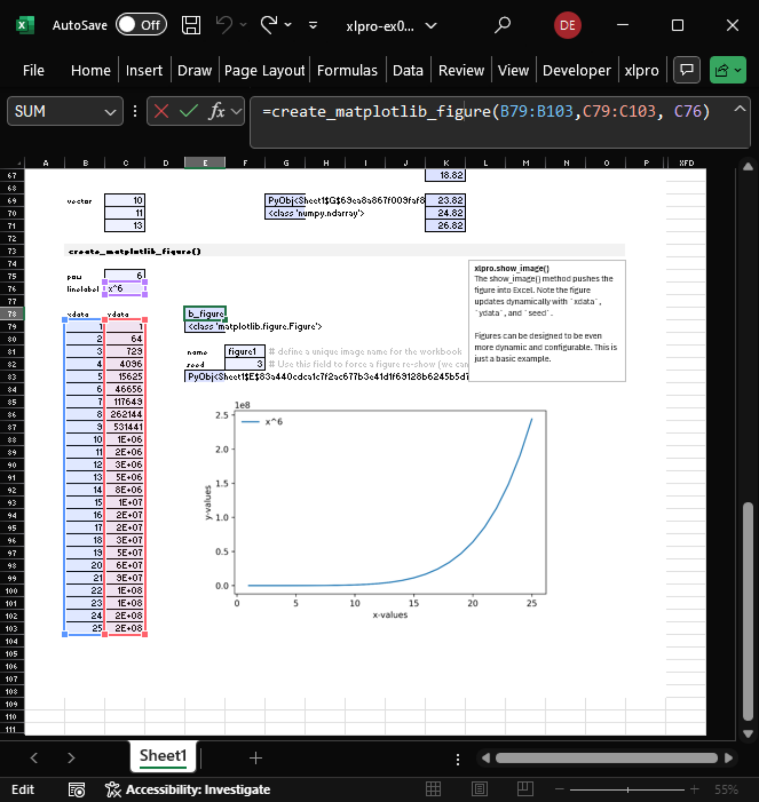
Initialize and Download Python
Create a new workbook, initialize it in xlpro using the button, use the (recommended) Create New Python 3.13 Environment option. This will download a new interpreter and will prompt you to install the dependencies for pre-existing projects.
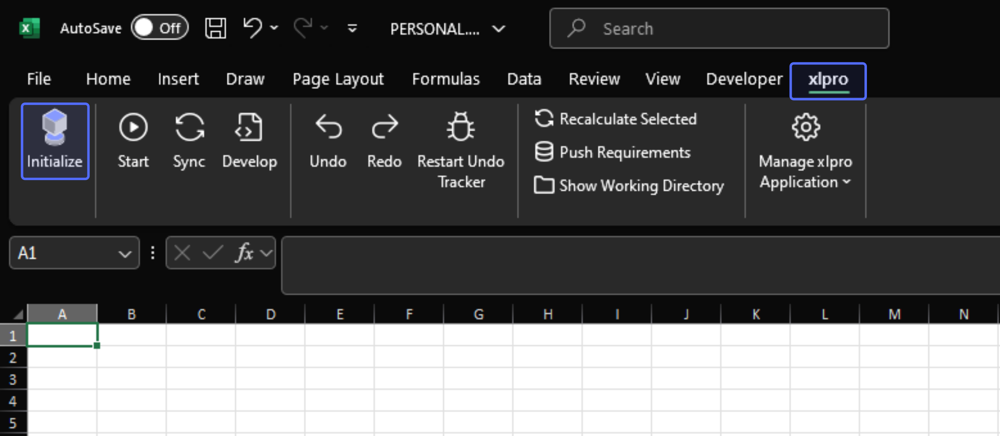
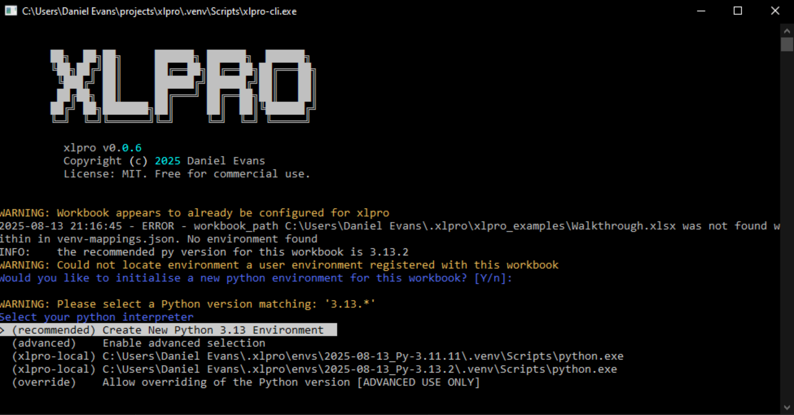
Writing and Using a Function
Open the VSCode workspace using the Develop ribbon button.
Add the following code to functions.py in the VSCode workspace. When we run the server, we will find a matching function becomes registered in Excel.
Start the server in Excel by pressing the Start button. This will create a startup process which will close in a few seconds, and a child process which shows the running Python calculation server for the workbook.
After a few seconds, the server will have prepared the VBA UDFs. In Excel, enter =custom_adder(1, 2), you should see the result 3 appear in the cell. Use the Sync button to try again if the function does not exist (e.g. #NAME error indicating the function does not exist.).
Now point the function to reference some cells, e.g. =custom_adder(A1, A2). Ensure both inputs are explicitly given as values, i.e. not blank cells, we'll touch on this later.
Returning Python Objects
Create a new function custom_adder_matrix. This function will take an 2D Excel argument a a, convert to a np.ndarray matrix, add b and return the result.
# Define a function which returns a matrix, this will return
# a np.ndarray object
def custom_adder_matrix(a, b):
a_mat = np.array(a)
return a_mat + b
You will notice that the matrix equation returns a PyObj... value. This indicates the cell points to an object reference.
Showing a PyObj
For now, we can use the xlpro.show() method and call it from Excel to visualise the result. Add this code to functions.py to register the show() function in Excel.
In Excel, use the formula =show(X) on the PyObj... cell. This will expand the result so you can pull the data into Excel for inspection, visualisation, or to pass to Excel functions or plots. Watch out to not create a #SPILL error.
Something similar can be done with figure or image objects.
Optional Arguments
Optional arguments can be declared. Try the following function in Excel and toggle the flag on and off.
# Optional arguments
def adder_or_subtractor(a, b, do_add:bool=True):
if do_add:
return a + b
return a - b
Excel's Formula Helper
Complex function inputs can be difficult to provide correctly in Excel. Use Excel's formula helper to
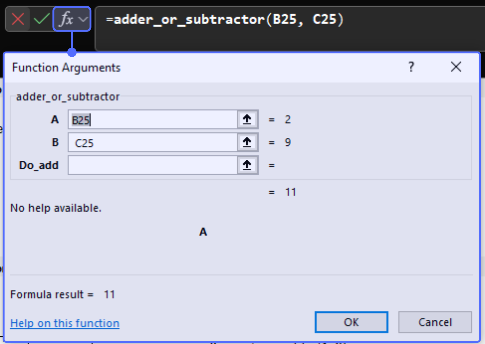
Arrays and Type Casting
In Excel, all range values are given as a row-major array. I.e. rows are returned as a 1 by m 2D array, and columns are returned as a n by 1 2D array. This would require the user to handle either case which could be cumbersome. xlpro features basic array type casting so you can choose whether to preserve the 2D shape of the input.
Create two new functions and import the classes needed for PEP 484 type hints.
def custom_adder_matrix(matrix:ndarray2d, constant:float):
return matrix + constant
def custom_adder_always_vector(vector:ndarray1d, constant:float):
return vector + constant
Try the following cases and inspect the output using =show() in Excel.
- Try
custom_adder_matrix(matrix, constant)with a ...- (n x m)
matrix(shape is maintained) - (n x 1)
matrix(row vector maintained) - (1 x m)
matrix(column vector maintained)
- (n x m)
- Try
custom_adder_always_vector(vector, constant)with a ...- (n x 1)
vector(returns n by 1 column vector) - (1 x m)
vector(returns m by 1 column vector) - (n x m)
vector(Exception, ndarray1d does not support 2D data types)
- (n x 1)
The companion types list1d and list2d behave similarly.
Creating a Figure
A matplotlib figure is a great tool for visualising data. We can write a function which takes three inputs xdata, ydata, and a linelabel to create a figure with a labelled line.
Prepare the file for using matplotlib figures like so:
# Import matplotlib and configure it to use a non-gui backend
import matplotlib
matplotlib.use('Agg')
import matplotlib.pyplot as plt
Then you can create a function which returns a matplotlib.figure.Figure, which we can use later in Excel.
def create_matplotlib_figure(
xdata:ndarray1d, # cast to a 1D array for convenience
ydata:ndarray1d, # as above
linelabel:str="", # the label of the line
create_legend:bool=False # boolean flag to create legend
):
"""Function which takes x and y data and generates a matplotlib figure,
and labels the line in the legend. Gives the user basic options to
configure a legend
"""
# Create the figure
fig, ax = plt.subplots()
# Plot the data and retrieve the line handle to use in the legend
ln, = ax.plot(xdata, ydata)
# Add axes labels
ax.set_xlabel("x-values")
ax.set_ylabel("y-values")
# Add a legend if the flag is provided
if create_legend:
ax.legend([ln], [linelabel], frameon=False)
# resize the figure to 170 by 100 mm.
fig.set_size_inches(np.array((170, 100)) / 25.4)
return fig # type: matplotlib.figure.Figure
Now in Excel, create some data for the x and y vectors in Excel and try the create_matplotlib_figure function. Ensure each input is a fully populated explocit array (i.e. no blank cells.)
When you see a PyObj output of this cell, it is ready to show using the show_image() function.
Showing a Figure Object
Register the xlpro.show_image function in Excel via the following:
The show_image function takes the following form:
excel_image_id: the unique string id of the image in Excelobj: the figure object to showseed: an argument purely to prompt recalculate.
Sync from Excel to update the function register. Call =show_image(...), providing the required excel_image_id and figure values. You will see a figure be added to Excel nearby. Note that seed is not required in this case, but you can use it to bump updates. You can also use the Recalculate Selected ribbon button.
Note the name of the figure in Excel will match the argument.
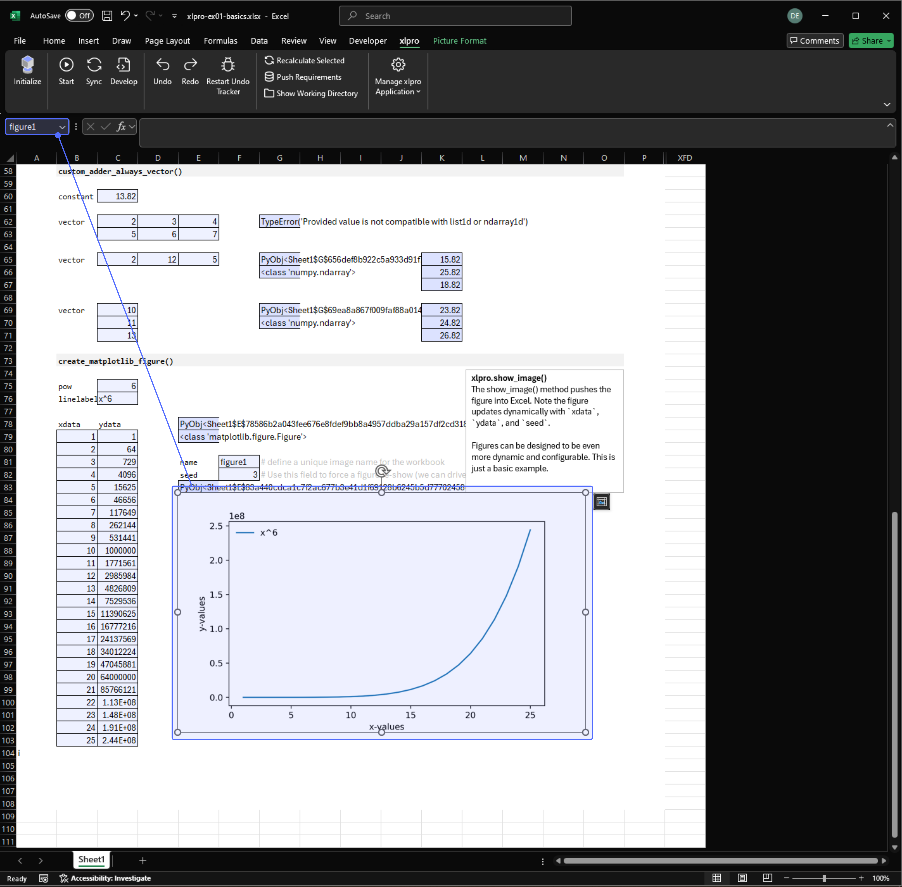
Dynamic Figure Updates and seed
It is possible to sequentially add lines to a figure object by applying a function which performs a change to the figure, e.g. add_line_to_axes(xdata, ydata, lineformat). The issue this raises is the timing of a show_image() call in Excel. We will end up with a race condition where the figure may not reflect the latest changes.
To manage this, the seed argument is intended to be any value which drives the render step. If this value is driven by all of the cells which manipulate the figure, then the show_image() function will only execute when the precedents have completed successfully.
Debugging Example
Copy-paste this function below into your project and call it from Excel. You will get a KeyError('Banana') return in Excel.
# functions.py
def get_banana_price():
"""Function which simulates fetching price data from an external source,
and returns the price of bananas.
"""
key = "Banana"
price_cents_per_kg = {
"Apple": 99,
"Orange": 140,
"banana": 87, # hint...
"Kiwi": 180,
"Mango": 204,
"Pineapple": 316,
}
return price_cents_per_kg[key]
Sync and try out the function in Excel. We get a KeyError response in the cell.
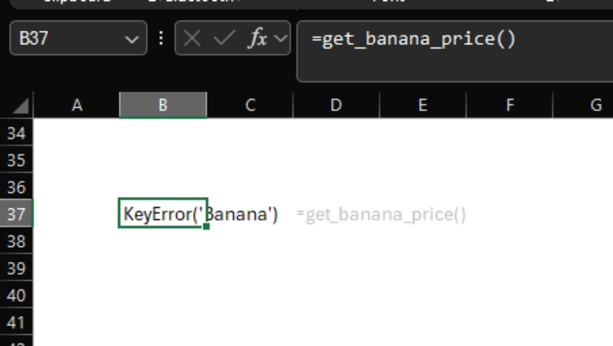
Now try out the debugger in VSCode, we will connect to the calculation server, so ensure the calculation server (Start button) is still running.
- Add a breakpoint on the
return price_cents_per_kg[key]line in VSCode - Navigate to the
Run and Debugpane (ctrl + shift + D) - Run the
xlpro debugpydebug configuration to connect.
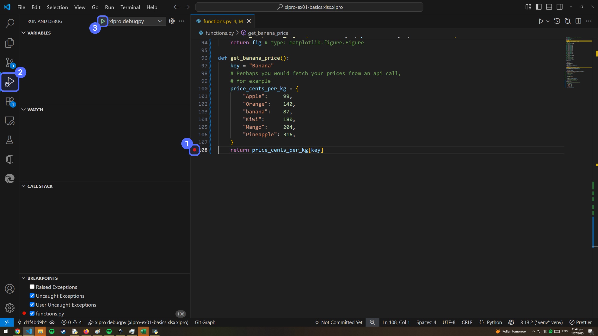
Re-run the calculation by either:
Sync-ing and recalculating the workbook e.g. usingF9- Calling
get_banana_price()from a new cell
The breakpoint should hit. If you are new to Python debugging, take note of:
- The highlighted area showing the next line to be executed
- The
Variablesexplorer area in the top-left - The
Debug Consoleat the bottom can be used to evaluate debugging code.
You can see that the error was caused by a case-mismatch in the strings all along...
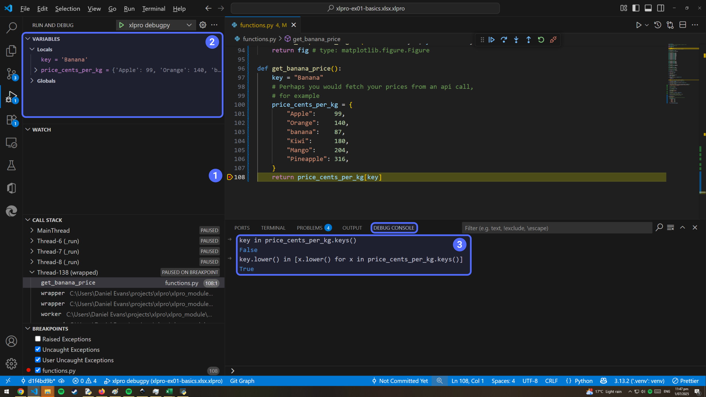
Debugger Settings
Activating the Raised Exceptions flag in the bottom left corner of VSCode will cause the debugger to break on all exceptions.
E.g. with our previous example we will see this.
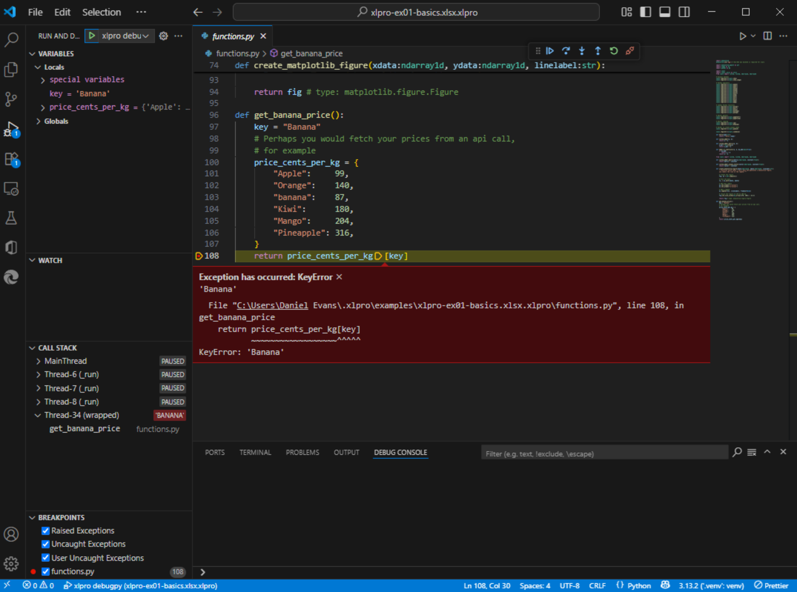
A Note On Breakpoints, and Excel Hangs
When you hit a breakpoint the entire calculation server pauses. This can cause the Excel UI to become unresponsive as it is unable to get a response from the calculation server.
This is simply caused by the entire Python process pausing when a breakpoint is hit, so resuming the server (or closing it) will let Excel resume.
Installing a Package
You may want to install packages to develop a more complex project beyond matplotlib, pandas and numpy. Lets install the yfinance package and build a graph to visualise some financial data.
This is as simple as opening a terminal in VSCode, and running pip install ...
Info
Ensure you run the Python: Clear Workspace Interpreter Setting from the command pallette (ctrl + shift + P) so VSCode knows which interpreter to activate.
Why? - xlpro relies on the Python exe path written to .vscode/settings.json.
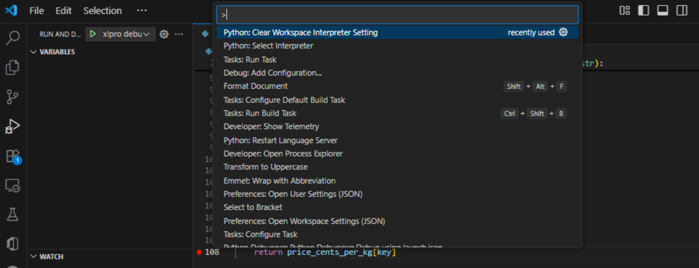
Now create a new terminal using ctrl + shift + ' or Terminal > New.
VSCode should pull the correct setting and automatically activate the correct environment. Now pip will install to the right Python interpreter.
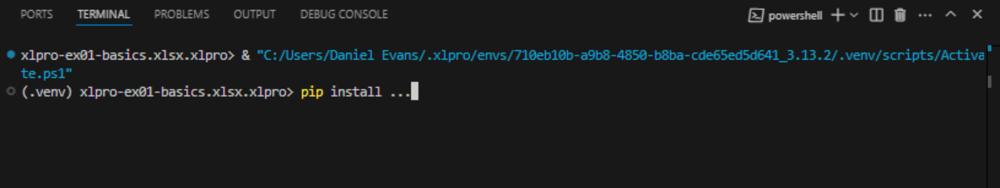
Reminder
If you install a new requirement, you should remember to also Push Requirements from the xlpro Excel ribbon to keep the server files up to date.
Data Visualisation Using External API Data
Refer to the xlpro_examples/xlpro-Showcase.xlsx.xlpro project for an example of yfinance.